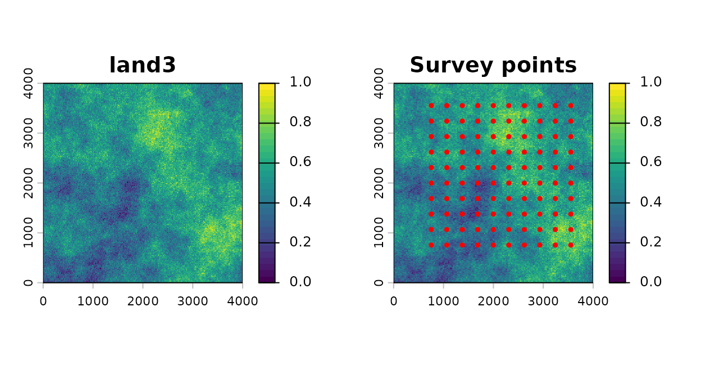
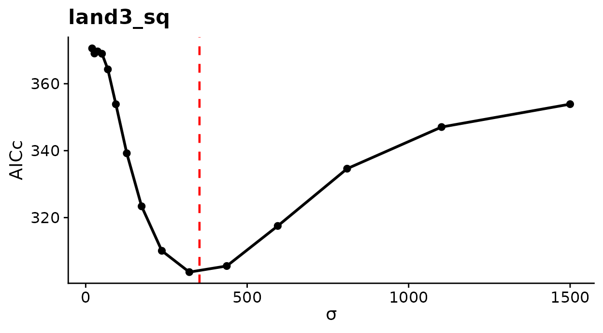
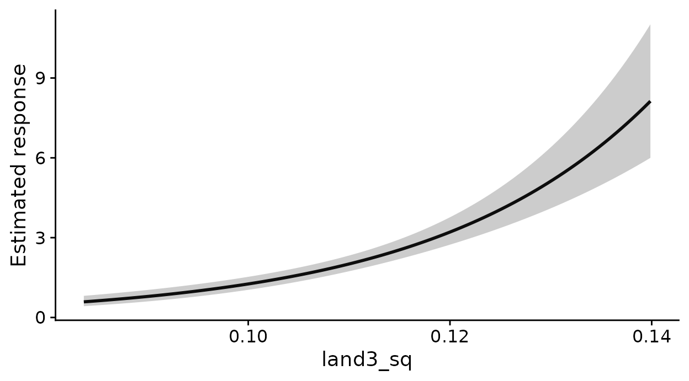
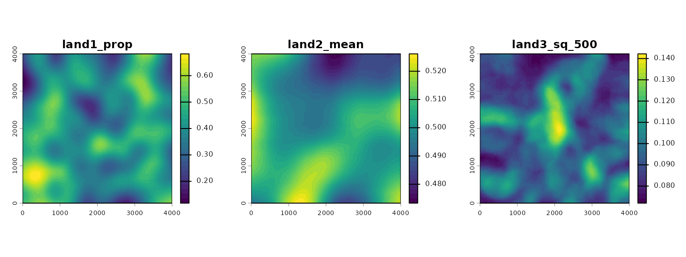
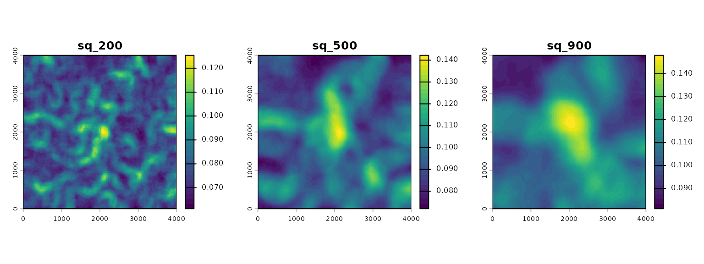
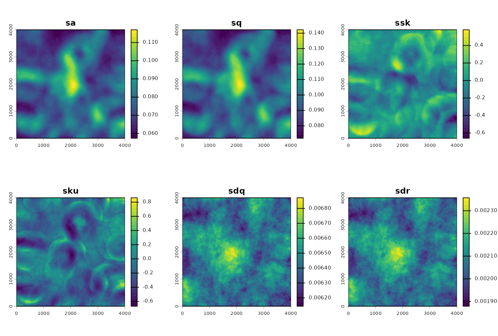
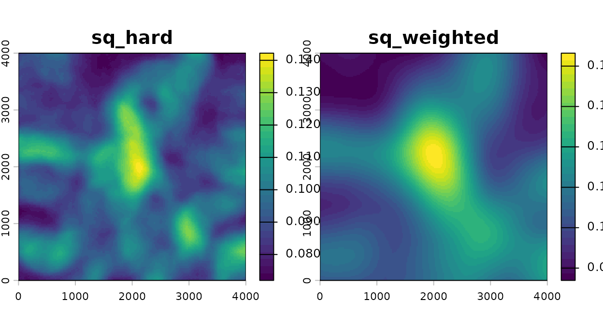

05. Surface Texture Metrics as Covariates
Bill Peterman
Source:vignettes/v05-surface-metrics.Rmd
v05-surface-metrics.RmdWhat this vignette covers
A kernel-weighted mean tells you the average value of a continuous
raster around a survey point. Two points can share the same average
elevation or canopy height while one sits in smooth terrain and the
other in rugged terrain. Surface texture metrics describe that
difference. surface_var() computes six of them from a
continuous raster within a neighborhood of each survey point, and each
metric then enters your model as a covariate.
This vignette shows what each family of metrics measures, which
scales you can fix and which you can estimate, and how to read a fitted
coefficient in the metric’s own units. You will add a roughness metric
to the count model from
vignette("v01-quickstart", package = "multiScaleR"), then
estimate the scale of roughness from counts simulated with a known
answer. Read the Quick Start first.
vignette("v04-landscape-metrics", package = "multiScaleR")
follows the same steps for categorical rasters.
Know what each metric family measures
Every metric summarizes the cells in a neighborhood of a survey point. By default the neighborhood is a circle with a hard edge, so each cell inside it counts equally. The table gives the ecological meaning and the units of each family.
| Family | Metrics | What it measures | Units |
|---|---|---|---|
| Dispersion |
sa (average roughness), sq
(root mean square roughness) |
How much the surface varies around its local mean, such as rugged against level terrain or a patchy against an even canopy | Units of the raster |
| Distribution shape |
ssk (skewness), sku (excess
kurtosis) |
Whether a few unusually high or low values stand out from the rest of the neighborhood | Unitless |
| Local geometry |
sdq (root mean square slope),
sdr (surface area ratio) |
How steeply the surface changes from one cell to the next, and how much surface area that relief adds |
sdq as rise over run, in raster units per
map unit. sdr as a percentage |
Four details apply across the table.
-
saandsqmeasure the same idea.sais the mean absolute deviation from the neighborhood mean.sqis the standard deviation, which squares the deviations and so responds more to a few extreme cells. -
Shape is read against a normal distribution.
sskis positive when occasional high values dominate and negative when occasional low values do.skuis 0 for a normal distribution of values. Both returnNAfor a flat neighborhood. -
Geometry needs matching units.
sdqdivides the change in value by the cell size, andsdris the percentage by which the three-dimensional surface area exceeds the flat area. Read them as a slope and an area ratio only when the raster values and the map share units, as elevation in meters does. -
Agreement with
geodiv.sa,sq,ssk, andskumatch thegeodivpackage.geodiv::sdq()assumes a cell size of one, so it equalssdqhere multiplied by the cell size.geodiv::sdr()rescales the surface to a unit range before it computes area, so its values differ fromsdrhere.
The help page ?msr_vars defines every metric.
Decide which scales to fix and which to estimate
The scale of a covariate is the distance over which the surface is
summarized. The radius and weighted arguments
decide whether you fix that distance or estimate it.
| How you write the covariate | Metrics | What sets the scale | What multiScale_optim() reports |
|---|---|---|---|
surface_var("elev", metric = "sq", radius = 500) |
All six | You do. The metric is computed once within 500 map units | No scale. The metric is an ordinary covariate |
surface_var("elev", metric = "sq") |
All six | The data. The hard radius is estimated with the model | The radius, without a standard error.
Profile-likelihood limits come from
summary(fit, profile = TRUE)
|
surface_var("elev", metric = "sq", weighted = TRUE) |
sa, sq, ssk,
sku
|
The data. Cells are weighted by the model’s kernel, and its width, sigma, is estimated | Sigma with a standard error and confidence interval |
kernel_var("elev") |
The mean, not a texture metric | The data. Sigma is estimated with the model | Sigma with a standard error and confidence interval |
With weighted = TRUE the scale is always estimated, so
supplying radius as well is an error. The geometry metrics
sdq and sdr have no weighted form.
What this means for your study. Fix the radius when you have a biological reason for a distance. When the scale of heterogeneity is itself the question, use
weighted = TRUE. Kernel weights change smoothly with sigma, so you get a standard error, and the estimate reads as a scale of effect in the same way a kernel mean does.
Work through an example
Load the data
The example uses the counts, survey points, and raster from the Quick
Start. The counts were simulated to respond to the kernel-weighted mean
of land1 (sigma of 250 m, effect of -0.5) and of
land2 (sigma of 500 m, effect of 0.7). No texture metric
entered the simulation.
data("landscape_counts") # data frame: counts and one site-level covariate
dat <- landscape_counts
data("surv_pts") # survey locations (an sf object from the package)
pts <- vect(surv_pts) # convert to a terra SpatVector
# Three landscape layers on one grid, in meters
land_rast <- rast(system.file("extdata", "landscape.tif",
package = "multiScaleR"))land3 is a continuous layer with values from 0 to 1 and
broad, smooth patches. Think of it as elevation or canopy height. It
supplies the texture metrics in this vignette.
par(mfrow = c(1, 2))
plot(land_rast$land3, main = "land3")
plot(land_rast$land3, main = "Survey points")
points(pts, pch = 19, cex = 0.5, col = "red")
The continuous land3 layer, alone and with the survey points.
Define the covariates
msr_vars() names each model covariate and says how to
derive it from a source layer. The model below keeps the two kernel
means from the Quick Start and adds the roughness of land3
within 500 m.
scale_vars <- msr_vars(
land1_prop = kernel_var("land1"), # proportion of habitat, sigma estimated
land2_mean = kernel_var("land2"), # mean of land2, sigma estimated
land3_sq_500 = surface_var("land3", metric = "sq",
radius = 500) # roughness of land3 within 500 m
)
scale_vars[, c("covariate", "source", "type", "metric", "radius", "optimize")]
#> multiScaleR variable specifications:
#> covariate source type metric radius optimize
#> land1_prop land1 kernel <NA> NA TRUE
#> land2_mean land2 kernel <NA> NA TRUE
#> land3_sq_500 land3 surface sq 500 FALSEHow to read the output: Each row is one model
covariate. source is the raster layer it comes from.
optimize is TRUE for the two kernel
covariates, whose sigma will be estimated, and FALSE for
the roughness metric, whose radius is fixed at 500 m.
Compute the metrics at the survey points
Pass the specification to kernel_prep() through
scale_vars. It extracts the cells within max_D
of each point and computes every covariate.
kernel_inputs <- kernel_prep(
pts = pts, # survey locations
raster_stack = land_rast, # source layers named in scale_vars
max_D = 1700, # largest distance (m) considered
kernel = "gaussian", # kernel for the two kernel covariates
scale_vars = scale_vars,
verbose = FALSE
)
# Mean and standard deviation of each covariate, in its own units
round(sapply(kernel_inputs$scl_params, function(x) x), 3)
#> mean sd
#> land1_prop 0.409 0.019
#> land2_mean 0.501 0.006
#> land3_sq_500 0.098 0.013How to read the output:
kernel_inputs$kernel_dat holds the covariates after
centering and scaling, which is what the model uses.
scl_params keeps the mean and standard deviation that were
removed, in the units of each metric. Roughness of land3
within 500 m averages 0.098 across the survey points, with a standard
deviation of 0.013. sq is in the units of the raster, and
land3 runs from 0 to 1, so a typical buffer holds values
that sit about a tenth of that range from their local mean. The rows for
the two kernel covariates are provisional, because they were computed at
a starting sigma.
Fit the model
Fit the starting model with the derived covariates, then let
multiScale_optim() estimate the two kernel scales. The
roughness metric was computed once and stays as it is.
df <- data.frame(dat, kernel_inputs$kernel_dat)
# Starting model: formula and family carry through to the optimizer
mod <- glm(counts ~ site + land1_prop + land2_mean + land3_sq_500,
family = poisson(),
data = df)
# Estimate sigma for land1_prop and land2_mean
opt <- multiScale_optim(fitted_mod = mod,
kernel_inputs = kernel_inputs,
verbose = FALSE)Read the estimated scale
summary(opt)
#>
#> Call:
#> multiScale_optim(fitted_mod = mod, kernel_inputs = kernel_inputs,
#> verbose = FALSE)
#>
#>
#> Kernel used:
#> gaussian
#>
#> ***** Optimized Scale of Effect *****
#>
#> Mean SE 2.5% 97.5%
#> land1_prop 233.0000 35.14626 163.2259 302.7742
#> land2_mean 493.5979 48.13896 398.0300 589.1658
#>
#>
#> ====================================
#>
#> ***** Optimized Scale of Effect -- Distance *****
#> Scale distances (map units) at 90%, two definitions.
#>
#> 2D, radius of the circle for the ideal untruncated kernel (selected):
#> Mean 2.5% 97.5%
#> land1_prop 500.01 350.28 649.74
#> land2_mean 1059.24 854.16 1264.33
#>
#> 1D, along a line through the point (comparison):
#> Mean 2.5% 97.5%
#> land1_prop 383.25 268.48 498.02
#> land2_mean 811.90 654.70 969.09
#>
#>
#> ====================================
#>
#> ***** Fitted Model Summary *****
#>
#>
#> Call:
#> glm(formula = counts ~ site + land1_prop + land2_mean + land3_sq_500,
#> family = poisson(), data = data)
#>
#> Coefficients:
#> Estimate Std. Error z value Pr(>|z|)
#> (Intercept) 0.39110 0.09122 4.287 1.81e-05 ***
#> site 0.16399 0.08592 1.909 0.0563 .
#> land1_prop -0.46590 0.08446 -5.516 3.46e-08 ***
#> land2_mean 0.63495 0.07664 8.284 < 2e-16 ***
#> land3_sq_500 0.04503 0.08389 0.537 0.5914
#> ---
#> Signif. codes: 0 '***' 0.001 '**' 0.01 '*' 0.05 '.' 0.1 ' ' 1
#>
#> (Dispersion parameter for poisson family taken to be 1)
#>
#> Null deviance: 224.24 on 99 degrees of freedom
#> Residual deviance: 109.33 on 95 degrees of freedom
#> AIC: 316
#>
#> Number of Fisher Scoring iterations: 5
#>
#>
#>
#> ***** Follow-up recommendation *****
#> Recommended `max_D`: 1700
#> Recommended starting `sigma` values:
#> land1_prop land2_mean
#> 233.0000 493.5979
#>
#> Action:
#> Use the optimized parameters as efficient starting values if refitting.How to read the summary() output: The
scale tables list only the two kernel covariates. Sigma for
land1_prop is 233 m, with a 95% interval of 163 to 303 m
that contains the true 250 m. Sigma for land2_mean is 494
m, against a true 500 m. The distance table converts each sigma to the
radius that holds 90% of the kernel weight, which is 500 m for
land1_prop and 1059 m for land2_mean.
Roughness is absent from the scale tables because you set its radius. It
appears only in the regression table, as an ordinary covariate measured
within 500 m.
Interpret a coefficient in the metric’s units
The regression coefficients are on the log scale, because the model is Poisson with a log link. Each one describes a change of one standard deviation, because the covariates were standardized. Two steps turn a coefficient into a statement about the metric. Divide by the metric’s standard deviation to get the effect of one unit, then exponentiate to get a multiplicative change in the expected count.
beta <- coef(opt$opt_mod) # log scale, per one standard deviation
ci <- confint.default(opt$opt_mod) # Wald 95% limits, log scale
sds <- opt$scl_params$sd # one standard deviation, in metric units
# A step that is easy to picture, in the units of the metric
step <- c(land3_sq_500 = 0.01) # 0.01 more roughness, in land3 units
m <- names(step)
effect <- data.frame(
Covariate = m,
SD = sds[m],
Step = step,
Multiplier = exp(beta[m] * step / sds[m]), # change in expected count
Lower = exp(ci[m, 1] * step / sds[m]),
Upper = exp(ci[m, 2] * step / sds[m])
)
knitr::kable(effect, digits = 3, row.names = FALSE)| Covariate | SD | Step | Multiplier | Lower | Upper |
|---|---|---|---|---|---|
| land3_sq_500 | 0.013 | 0.01 | 1.035 | 0.912 | 1.174 |
How to read the table: Multiplier is
the factor by which the expected count changes when the metric rises by
Step, with the other covariates held constant. An increase
of 0.01 in the roughness of land3 within 500 m multiplies
the expected count by 1.04, with a 95% interval of 0.91 to 1.17. The
interval includes 1, which means no change. That is the right answer
here, because roughness was not used to simulate the counts. The
interval treats the estimated sigma values as known, as explained in
vignette("v09-estimates-and-intervals", package = "multiScaleR").
Estimate the scale of a metric
The running example has no roughness effect to recover, so this
section simulates one. The counts below respond to the kernel-weighted
roughness of land3, with a Gaussian kernel whose sigma is
300 m and an effect of 0.5 on the log scale for each standard deviation
of roughness.
# Kernel-weighted roughness: cells are weighted by the model's kernel
weighted_vars <- msr_vars(
land3_sq = surface_var("land3", metric = "sq", weighted = TRUE)
)
# Roughness at a sigma of 300 m, the scale used to simulate the counts
truth_inputs <- kernel_prep(
pts = pts,
raster_stack = land_rast["land3"],
max_D = 1500,
kernel = "gaussian",
scale_vars = weighted_vars,
sigma = 300, # compute the covariate at this sigma
verbose = FALSE
)
set.seed(1)
# kernel_dat is standardized, so 0.5 is the effect of one standard deviation
sim_counts <- rpois(100, exp(0.5 + 0.5 * truth_inputs$kernel_dat$land3_sq))To estimate the scale, prepare the same specification without a sigma. Everything else is the usual workflow.
free_inputs <- kernel_prep(
pts = pts,
raster_stack = land_rast["land3"],
max_D = 1500, # sigma is searched within this distance
kernel = "gaussian",
scale_vars = weighted_vars,
verbose = FALSE
)
sim_df <- data.frame(counts = sim_counts, free_inputs$kernel_dat)
sim_mod <- glm(counts ~ land3_sq, family = poisson(), data = sim_df)
sim_opt <- multiScale_optim(fitted_mod = sim_mod,
kernel_inputs = free_inputs,
verbose = FALSE)
# Sigma with its standard error and 95% interval, in meters
sim_scale <- summary(sim_opt)$opt_scale
round(sim_scale, 1)
#> Mean SE 2.5% 97.5%
#> land3_sq 352.4 53.5 246.2 458.6
# Radius that holds 90% of the kernel weight, in meters
sim_dist <- kernel_dist(sim_opt)
round(sim_dist)
#> Mean 2.5% 97.5%
#> land3_sq 756 528 984How to read the output: Mean in the
first table is the estimated sigma, 352 m, with a 95% interval of 246 to
459 m that contains the 300 m used to simulate the counts. Unlike a hard
radius, a kernel-weighted metric has a standard error. Sigma is a kernel
width, not a radius. The second table converts it to an effective
distance. The variability of land3 within about 756 m of a
survey point shapes the count.
# Refit the model at 15 candidate sigma values
plot(profile_sigma(sim_opt, n_pts = 15, verbose = FALSE))
AICc across candidate sigma values for kernel-weighted roughness. The dashed line marks the estimate.
How to read this plot: Lower AICc means better support. A single deep trough near the dashed line means the data identify the scale. A flat profile, or one that keeps falling toward the edge of the search range, would mean the data say little about it.
Interpret the coefficient as before. The standard deviation now belongs to roughness at the estimated sigma.
sim_beta <- coef(sim_opt$opt_mod)["land3_sq"] # per standard deviation
sim_ci <- confint.default(sim_opt$opt_mod)["land3_sq", ]
sim_sd <- sim_opt$scl_params$sd["land3_sq"] # land3 units, fitted sigma
# Change in expected count for 0.01 more roughness
sim_effect <- exp(c(Estimate = unname(sim_beta), Lower = sim_ci[[1]],
Upper = sim_ci[[2]]) * 0.01 / sim_sd)
round(sim_effect, 3)
#> Estimate Lower Upper
#> 1.596 1.445 1.763
# The value used in the simulation, on the same footing
round(exp(0.5 * 0.01 / truth_inputs$scl_params$sd["land3_sq"]), 3)
#> land3_sq
#> 1.503How to read the output: At the estimated scale, each additional 0.01 of roughness multiplies the expected count by 1.60, an increase of 60%. The 95% interval runs from 1.44 to 1.76 and contains the simulated value on the last line.
plot_marginal_effects(sim_opt)
Expected count across the observed range of kernel-weighted roughness at the estimated sigma.
How to read this plot: The horizontal axis is
roughness in the units of land3, not the standardized
covariate, so you can read expected counts directly against the metric.
The shaded band is a 95% confidence band for the expected count that
treats the estimated sigma as known.
What this means for your study. Changing the scale of a texture metric changes the quantity, not only its smoothness. A small neighborhood measures fine-grained texture. A large one also takes in broad gradients and patchiness. The estimated scale is the neighborhood size at which variability best explains the response.
To estimate a hard radius in place of a kernel sigma, write
surface_var("land3", metric = "sq") with neither
radius nor weighted. All six metrics accept
that form. summary() then reports the radius without a
standard error, as it does for a landscape metric, and
vignette("v04-landscape-metrics", package = "multiScaleR")
shows how to read that output.
Map the metrics
Map the covariates of a fitted model
kernel_scale.raster() applies each covariate definition
to the whole raster. Given a fitted model, it uses the estimated sigma
for kernel covariates and the stated radius for fixed-radius
metrics.
projected <- kernel_scale.raster(raster_stack = land_rast,
multiScaleR = opt, # the fitted object
verbose = FALSE)
names(projected)
#> [1] "land1_prop" "land2_mean" "land3_sq_500" "site"
plot(projected[[1:3]], nc = 3, mar = c(2, 2, 2, 5)) # room for each legend
The covariates of the fitted model, in their own units.
How to read these plots: Each layer carries the name
of a model covariate and is in that covariate’s units.
land1_prop and land2_mean are smoothed
averages. land3_sq_500 is different in kind. It is high
where land3 changes within 500 m and low where
land3 is locally uniform, so it marks transitions between
patches and not the patches themselves. The fourth layer,
site, is a constant zero. site was measured at
the survey points and has no raster, so the function adds a placeholder
to let the stack go straight to terra::predict().
To predict from the model, add scale_center = TRUE so
the layers are standardized as the model’s covariates were, and
clamp = TRUE to stay inside the fitted range.
vignette("v03-map-predictions", package = "multiScaleR")
covers prediction maps.
Map a metric without a model
You do not need a fitted model to map a metric. Pass a specification in which every covariate has a fixed radius.
sq_multi <- kernel_scale.raster(
raster_stack = land_rast["land3"],
scale_vars = msr_vars(
sq_200 = surface_var("land3", metric = "sq", radius = 200),
sq_500 = surface_var("land3", metric = "sq", radius = 500),
sq_900 = surface_var("land3", metric = "sq", radius = 900)
),
verbose = FALSE
)
# Mean of each surface, in land3 units
round(t(global(sq_multi, "mean", na.rm = TRUE)), 3)
#> sq_200 sq_500 sq_900
#> mean 0.081 0.096 0.108
plot(sq_multi, nc = 3, mar = c(2, 2, 2, 5)) # room for each legend
Root mean square roughness of land3 at three radii.
How to read these plots: The same metric looks
different at each radius. At 200 m the surface picks out local texture,
so roughness is patchy. At 900 m each buffer spans more of the broad
gradient in land3, so the surface is smoother and its mean
is higher. This is the reason an estimated scale matters.
Compare the six metrics
Map all six metrics at one radius, then check how they relate at the survey points before you put more than one in a model.
six <- kernel_scale.raster(
raster_stack = land_rast["land3"],
scale_vars = msr_vars(
sa = surface_var("land3", metric = "sa", radius = 500),
sq = surface_var("land3", metric = "sq", radius = 500),
ssk = surface_var("land3", metric = "ssk", radius = 500),
sku = surface_var("land3", metric = "sku", radius = 500),
sdq = surface_var("land3", metric = "sdq", radius = 500),
sdr = surface_var("land3", metric = "sdr", radius = 500)
),
verbose = FALSE
)
plot(six, nc = 3, mar = c(2, 2, 2, 5)) # room for each legend
The six texture metrics of land3 within 500 m.
# Correlation among the metrics at the survey points
round(cor(extract(six, pts, ID = FALSE)), 2)
#> sa sq ssk sku sdq sdr
#> sa 1.00 1.00 -0.12 -0.54 0.36 0.38
#> sq 1.00 1.00 -0.14 -0.49 0.37 0.39
#> ssk -0.12 -0.14 1.00 -0.20 -0.22 -0.21
#> sku -0.54 -0.49 -0.20 1.00 -0.01 -0.03
#> sdq 0.36 0.37 -0.22 -0.01 1.00 1.00
#> sdr 0.38 0.39 -0.21 -0.03 1.00 1.00How to read the output: sa and
sq share one pattern, and so do sdq and
sdr. Their correlations at the survey points round to 1, so
a model can use only one member of each pair. ssk and
sku show different patterns because they describe the shape
of the distribution of values and not its spread. The values of
sdq and sdr are tiny here because
land3 is a unitless layer on a grid with 20 m cells.
Compare a hard radius with kernel weights
Mapping a kernel-weighted metric needs the kernel and its sigma, because no fitted model supplies them.
sq_hard <- kernel_scale.raster(
raster_stack = land_rast["land3"],
scale_vars = msr_vars(sq_hard = surface_var("land3", metric = "sq",
radius = 500)),
verbose = FALSE
)
sq_weighted <- kernel_scale.raster(
raster_stack = land_rast["land3"],
scale_vars = msr_vars(sq_weighted = surface_var("land3", metric = "sq",
weighted = TRUE)),
sigma = 500, # kernel width for the weighted metric (m)
kernel = "gaussian",
verbose = FALSE
)
plot(c(sq_hard, sq_weighted))
Roughness of land3 within a 500 m hard radius, and with Gaussian weights at a sigma of 500 m.
How to read these plots: Both maps show the local
roughness of land3. The weighted map is smoother for two
reasons. Nearby cells count more than distant ones, and a Gaussian
kernel with a sigma of 500 m places 90% of its weight within about 1,075
m, a wider area than the 500 m circle.
Check these before you fit
-
Raster type.
surface_var()expects continuous values. For class codes usevignette("v04-landscape-metrics", package = "multiScaleR"). - Correlated metrics. Texture metrics from one layer often move together. Check their correlations, as above, and keep one member of a correlated pair.
-
Variation among points. A metric that barely varies
among survey points cannot explain the response. Check
kernel_inputs$scl_params$sdbefore fitting. - Enough cells. Shape metrics are noisier than dispersion metrics and need many cells in the neighborhood to be stable.
-
Method support. The table below lists what each
form of a texture metric accepts.
vignette("v07-fitting-methods", package = "multiScaleR")gives the full matrix.
| Form | Metrics | Fitting methods |
|---|---|---|
| Fixed radius | All six | Every backend of multiScale_optim() and
multiScale_bayes(), because the metric is an ordinary
numeric covariate |
| Estimated hard radius | All six |
multiScale_optim() with the default
backend = "refit"
|
| Kernel weighted |
sa, ssk,
sku
|
multiScale_optim() with the default
backend = "refit"
|
| Kernel weighted | sq |
The default backend, and with a Gaussian or exponential
kernel the profile_glm, joint_nb2,
conditional_logit, and joint_mixed backends
and multiScale_bayes()
|
Quick reference
library(multiScaleR)
library(terra)
# 1. Load the data
data("landscape_counts"); data("surv_pts")
dat <- landscape_counts
pts <- vect(surv_pts)
land_rast <- rast(system.file("extdata", "landscape.tif",
package = "multiScaleR"))
# 2. Define the covariates: two kernel means and one fixed-radius metric
scale_vars <- msr_vars(
land1_prop = kernel_var("land1"),
land2_mean = kernel_var("land2"),
land3_sq_500 = surface_var("land3", metric = "sq", radius = 500)
)
# 3. Compute the covariates at the survey points
kernel_inputs <- kernel_prep(pts = pts, raster_stack = land_rast,
max_D = 1700, kernel = "gaussian",
scale_vars = scale_vars, verbose = FALSE)
kernel_inputs$scl_params # mean and SD of each metric, in its units
# 4. Fit the model and estimate the kernel scales
df <- data.frame(dat, kernel_inputs$kernel_dat)
mod <- glm(counts ~ site + land1_prop + land2_mean + land3_sq_500,
family = poisson(), data = df)
opt <- multiScale_optim(fitted_mod = mod, kernel_inputs = kernel_inputs,
verbose = FALSE)
summary(opt) # sigma, effective distance, regression table
# 5. Read a metric coefficient in the metric's units
beta <- coef(opt$opt_mod)
sds <- opt$scl_params$sd
exp(beta["land3_sq_500"] * 0.01 / sds["land3_sq_500"]) # per 0.01 of roughness
# 6. Estimate the scale of a metric: weight it with the kernel
weighted_vars <- msr_vars(
land3_sq = surface_var("land3", metric = "sq", weighted = TRUE)
)
truth_inputs <- kernel_prep(pts = pts, raster_stack = land_rast["land3"],
max_D = 1500, kernel = "gaussian",
scale_vars = weighted_vars, sigma = 300,
verbose = FALSE)
set.seed(1)
sim_counts <- rpois(100, exp(0.5 + 0.5 * truth_inputs$kernel_dat$land3_sq))
free_inputs <- kernel_prep(pts = pts, raster_stack = land_rast["land3"],
max_D = 1500, kernel = "gaussian",
scale_vars = weighted_vars, verbose = FALSE)
sim_df <- data.frame(counts = sim_counts, free_inputs$kernel_dat)
sim_mod <- glm(counts ~ land3_sq, family = poisson(), data = sim_df)
sim_opt <- multiScale_optim(fitted_mod = sim_mod, kernel_inputs = free_inputs,
verbose = FALSE)
summary(sim_opt)$opt_scale # sigma, SE, and 95% interval
kernel_dist(sim_opt) # radius holding 90% of the weight
plot(profile_sigma(sim_opt, n_pts = 15, verbose = FALSE)) # AICc by sigma
plot_marginal_effects(sim_opt) # expected count against roughness
# 7. Map the covariates of a fitted model, or a metric on its own
projected <- kernel_scale.raster(raster_stack = land_rast,
multiScaleR = opt, verbose = FALSE)
sq_multi <- kernel_scale.raster(
raster_stack = land_rast["land3"],
scale_vars = msr_vars(
sq_200 = surface_var("land3", metric = "sq", radius = 200),
sq_500 = surface_var("land3", metric = "sq", radius = 500),
sq_900 = surface_var("land3", metric = "sq", radius = 900)),
verbose = FALSE)
sq_weighted <- kernel_scale.raster(
raster_stack = land_rast["land3"],
scale_vars = msr_vars(sq_weighted = surface_var("land3", metric = "sq",
weighted = TRUE)),
sigma = 500, kernel = "gaussian", verbose = FALSE)Summary of key functions
| Function | Purpose |
|---|---|
msr_vars() |
Collect named covariate definitions into one specification |
kernel_var() |
Define a kernel-weighted mean whose sigma is estimated |
surface_var() |
Define a texture metric from a continuous raster, with a fixed radius, an estimated radius, or kernel weights |
kernel_prep() |
Compute the covariates at the survey points and store their means and standard deviations |
multiScale_optim() |
Estimate every free sigma and radius together with the regression coefficients |
summary(), kernel_dist()
|
Report scales, effective distances, and the regression table |
profile_sigma() |
Show how well the data identify each scale |
plot_marginal_effects() |
Draw the expected response against each covariate in its own units |
kernel_scale.raster() |
Map covariates, with or without a fitted model |
See also
-
vignette("v01-quickstart", package = "multiScaleR"), the core workflow and how to read a fitted model. -
vignette("v04-landscape-metrics", package = "multiScaleR"), the matching workflow for composition and configuration of a categorical raster. -
vignette("v07-fitting-methods", package = "multiScaleR"), which fitting methods accept which covariate types. -
vignette("v03-map-predictions", package = "multiScaleR"), prediction maps and projection beyond the sampled conditions. -
vignette("v02-user-guide", package = "multiScaleR"), kernels, intervals, and model selection in depth. - The help page
?msr_varsdefines every supported metric. - The help page
?"multiScaleR-glossary"defines the terms used in these vignettes.